← Home · Junior Cycle · Projects
1st year · Design and make a bedside lamp from recycled materials, using electronics and CAD.
Skills: Design process, electronics (LED circuit), CAD, materials, tools and safety.
Tick each step off as you finish it. Your ticks are saved on this device only.
Lamps made by previous students. Click a photo to see it full size. Use them for ideas, then make your own design: notice how each one uses a recycled material or a theme to make it unique.
A complete lamp design project by a previous student, from the design brief to the conclusion. It shows each stage of the design process: analysing the brief, a survey, research, a mind map, a mood board, three design sketches, the final design with its base, lampshade and circuit costs, CAD models and an evaluation.
Open the sample project (PDF, 18 pages)
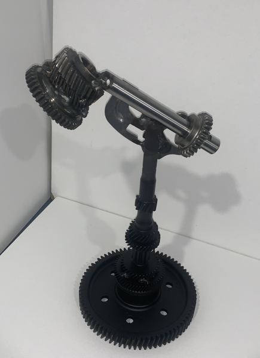
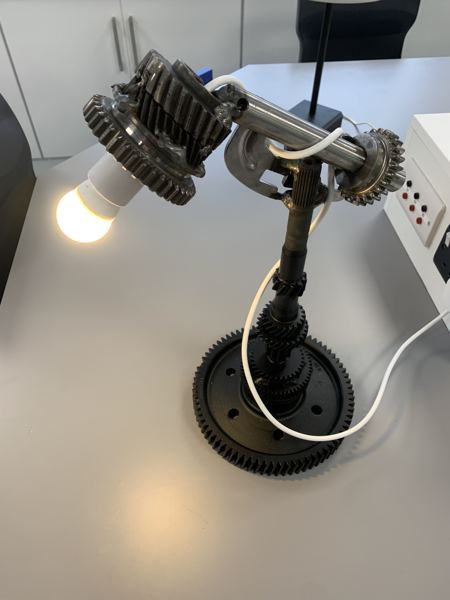
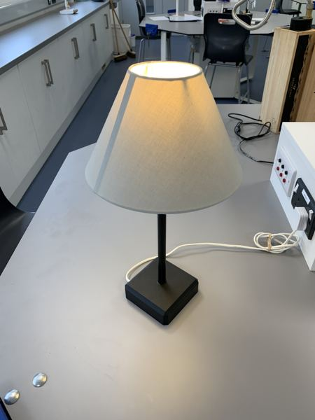
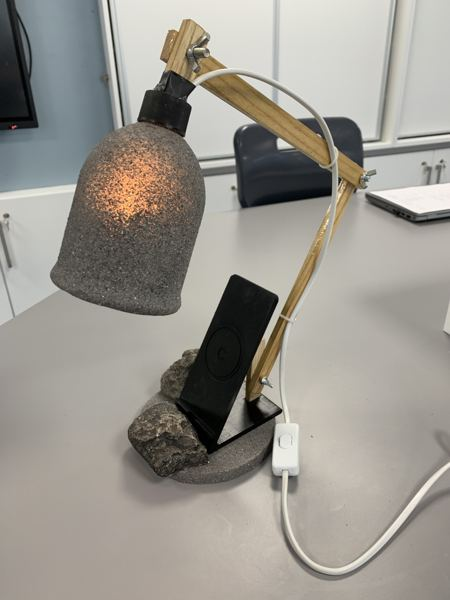
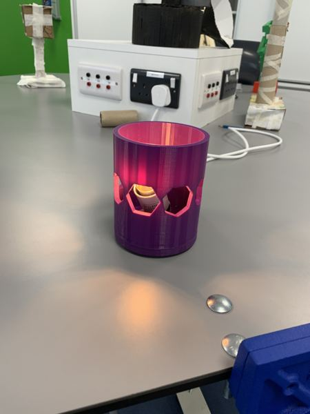
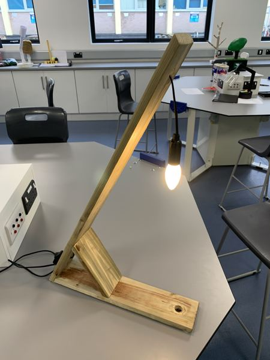
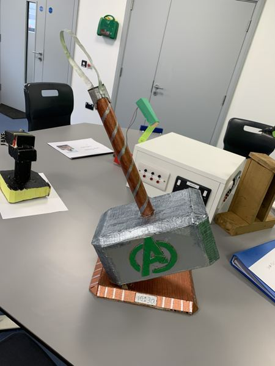
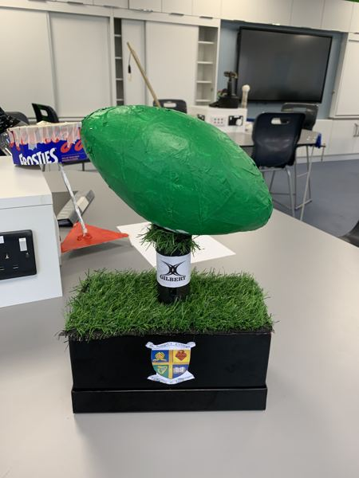
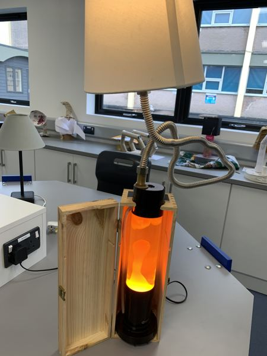
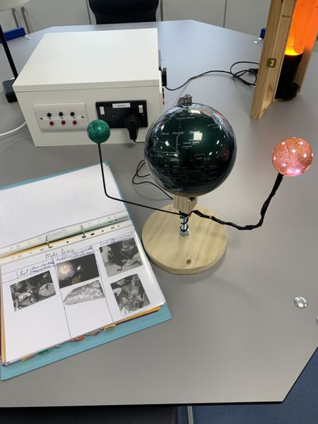
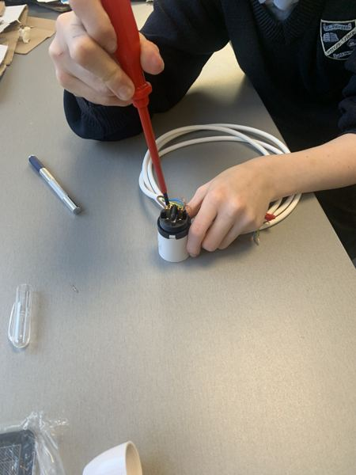
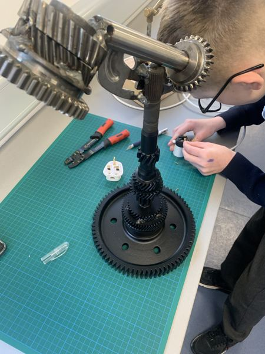
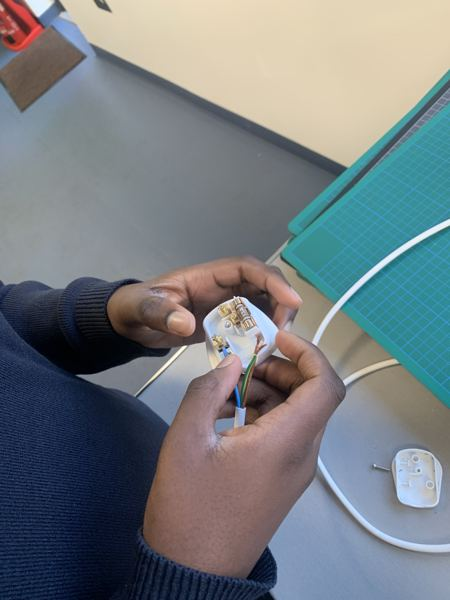